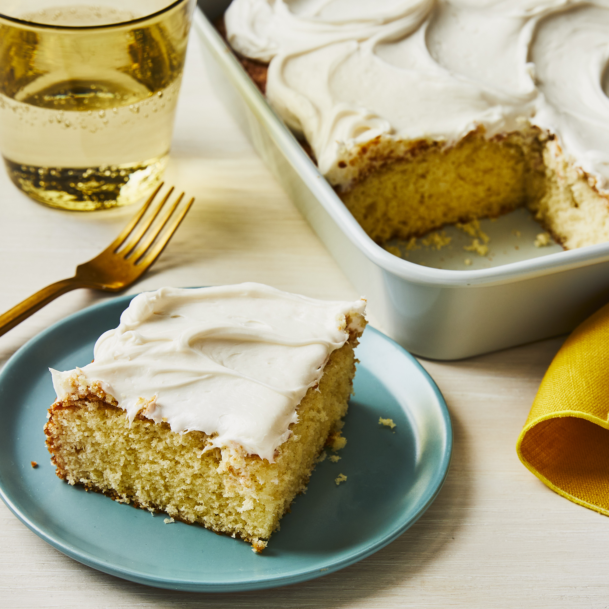

Simple White Cake

Simple but Sweet
Just as the name implies it as simple as you want it but at the same time you are getting something of greater value. Generally cakes are known for being sweet, delicious and sumptous but they it's not time friendly and takes a lot of effort but what about a simple way to make that cake without sacrificing quality or taste.
We all want to cut corners but it does not go without a risk or loss. This may happen else where but not with our Simple White Cake
This can be your everyday's favorite if you are ready to try out this wonderful recipie but don't foget it always gets sweeter when you share with friends.
Ingredients
- 1 cup white sugar
- ½ cup unsalted butter
- 2 large eggs
- 2 teaspoons vanilla extract
- 1½ cups all-purpose flour
- 1¾ teaspoons baking powder
- ½ cup milk
Steps
- Preheat the oven to 350 degrees F (175 degrees C). Grease and flour a 9-inch square cake pan.
- Cream sugar and butter together in a mixing bowl. Add eggs, one at a time, beating briefly after each addition. Stir in vanilla.
- Combine flour and baking powder in a separate bowl. Add to the wet ingredients and mix well. Add milk and stir until smooth. Pour batter into the prepared cake pan.
- Bake in the preheated oven until the top springs back when lightly touched, 30 to 40 minutes.